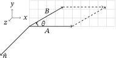

Math, Science, and Engineering Handbook
Math, Science, and Engineering Handbook
August 12, 2023
Chapter 1 Math
1.1 Integrals
| 1 | |
| 2 | |
| 3 | |
| 4 | |
| 5 | |
| 6 | |
| 7 | |
| 8 | |
| 9 | |
| 10 |  |
| 11 | |
| 12 | |
| 13 | |
| 14 | |
| 15 |
1.2 Formulas
| Quadratic Approximation | |
| Chain Rule | |
| Weighted Average |
1.3 L’Hôpital’s Rule
![\[ \lim _{x \to a} f(x)/g(x) = \lim _{x \to a} f'(x)/g'(x) \]](bwmse-images/image-22.svg)
| Straight up | |
| Straight up | |
| Rewrite as quotient | |
| Rewrite as | |
| Rewrite as | |
| Rewrite as | |
| Good luck | |
| Otherwise | Forget it. |
1.4 Vector Products
Dot Product

The scalar value of the dot product is the sum of the product of the vector components
Geometrically, the scalar value is the length of the projection of onto .
Cross Product

Geometrically, the vector value of the cross product is the area of the parallelogram formed by and times the unit vector normal to the plane of the parallelogram following the right hand rule.
Special Values

1.5 Parametric Vector Calculus
| Position | |||||
| Velocity | |||||
| Acceleration | |||||
| Arc Length | |||||
| Unit Tangent |
1.6 Partial Differentiation
| Tangent Plane to | |
| Approximation |
1.7 Least Square Line
for given points
1.8 Second Derivative Test
Given critical points where and
 , or , or |
Minimum point |
| , or |
Maximum point |
| Saddle point | |
| Need higher order terms to conclude |
1.9 Differential Chain Rule
;
1.10 Level Curves and Surfaces
The level curve for a function is the set of points where for constant .
1.11 Gradient
The gradient of (potential) function is a vector of the partial derivatives of for each independant variable; e.g. . , i.e. gradient level curve.
The directional derivitive of at the point in the direction of is .
Given an objective function and a constraint function for constant , the extrema of are found when . The Lagrange multiplier is .
1.12 Center of Mass
| Mass | |
| Density Function | |
| center | |
| center |

1.13 Moment of Inertia
| Moment about axis | |
| Moment about axis |

1.14 Change of Variables
![(1.1–0) \{begin}{align*} \int \int _R{f(x,y) \,dx \,dy} &=\int \int _R{g(u,v)\, |J| \,du \,dv} \\ g(u,v) &= f(x(u,v),y(u,v)) \\ |J| &= \begin{vmatrix} \frac {\partial
{(x,y)}}{\partial {(u,v)}}\\ \end {vmatrix} = \begin{vmatrix} \frac {\partial {x}}{\partial {u}} & \frac {\partial {x}}{\partial {v}}\\ \frac {\partial {y}}{\partial {u}} & \frac
{\partial {y}}{\partial {v}}\\ \end {vmatrix} \\ \begin{vmatrix} \frac {\partial {(x,y)}}{\partial {(u,v)}}\\ \end {vmatrix} \cdot \begin{vmatrix} \frac {\partial {(u,v)}}{\partial {(x,y)}}
\end {vmatrix} &= 1 \{end}{align*}](bwmse-images/image-112.svg)
1.15 Vector Field
| Field | ||
| Field component in direction () | ||
| Field component in direction () | ||
| Curve = |

1.16 Rectangular/Polar Conversion
1.17 Complex Arithmetic
![(1.1–0) \{begin}{align*} i &= \sqrt {-1} && \text {Imaginary unit} \\ z &= a + bi && \text {Complex number z} \\ \bar {z} &= a - bi && \text
{Complex congugate} \\ a &= Re(a + bi) && \text {Real part} \\ b &= Im(a + bi) && \text {Imaginary part} \\ (a+bi)+(c+di) &= (a+c) + (b+d)i && \text
{Addition} \\ (a+bi)\cdot (c+di) &= (ac-bd) + (ad+bc)i && \text {Multiplication} \\ \frac {a+bi}{c+di} &= \frac {(ac+bd) + (bc-ad)i}{c^2+d^2} && \text {Division} \\
\abs {z} &= \sqrt {a^2+b^2} && \text {Absolute value, Modulus} \\ arg(z) &= tan^{-1}(b/a) = \theta && \text {Argument} \\ z\bar {z} &= \abs {z}^2 && \text
{Modulus squared} \\ e^{i\theta } &= cos(\theta ) + i\,sin(\theta ) && \text {Euler's Formula} \\ z &= \abs {z}[cos(\theta ) + i\,sin(\theta )] && \text {Polar
form I} \\ z &= \abs {z}e^{i\theta } && \text {Polar form II} \\ \{end}{align*}](bwmse-images/image-127.svg)
1.18 Sinusoidal Functions
| Amplitude | |
| Angular Frequency | |
| Phase lag | |
| Time delay | |
| Frequency | |
| Period |
1.19 Sinusoidal Identity

| Rectangular (Cartesian) form | |
| Amplitude-phase form |
1.20 Line Integral

Work
Force on particle along a curve.


Flow
Flow across a curve.

Area
Area of a simply connected closed curve.

1.21 Gradient Field
If then the field is conservative.
1.22 Green’s Theorem

1.23 Differential Equations
Separation of Variables

Integrating Factors
1.24 Fourier Series
Fourier Coefficients
![(1.1–0) \{begin}{align*} L &= \text {half period}\\ t &= \text {dependent variable, generally time} \\ f(t) &= \text {given function}\\ f(t) &= \frac {a_{0}}{2} +
\sum _{n=1}^{\infty } a_ncos(nt) + b_nsin(nt)\\ a_0 &= \frac {1}{L} \int _{-L}^{L} f(t)\,dt\\ a_n &= \frac {1}{L} \int _{-L}^{L} f(t)\,cos(n\frac {\pi }{L}t)\,dt \\ b_n &= \frac
{1}{L} \int _{-L}^{L} f(t)\,sin(n\frac {\pi }{L}t)\,dt \\ a_n &= \frac {2}{L} \int _{0}^{L} f(t)\,cos(n\frac {\pi }{L}t)\,dt && b_0=0, f(t)=f(-t),\,\text {even function.} \\ b_n
&= \frac {2}{L} \int _{0}^{L} f(t)\,sin(n\frac {\pi }{L}t)\,dt && a_0=0, f(-t)=-f(t),\,\text {odd function.} \\ \{end}{align*}](bwmse-images/image-153.svg)
Chapter 2 Science
2.1 Units
| Quantity | MKS | Name | Abbrev. |
| Angle | radian | rad | |
| Solid Angle | steradian | ||
| Area | |||
| Volume | |||
| Frequency | Hertz | ||
| Velocity | |||
| Acceleration | |||
| Angular Velocity | |||
| Angular Acceleration | |||
| Density | |||
| Momentum | |||
| Angular Momentum | |||
| Force | Newton | ||
| Work, Energy | Joule | ||
| Power |  |
Watt | |
| Torque | |||
| Pressure | Pascal |
2.2 Lab Reports
| Abstract |
| Objective |
| Method |
| Data |
| Analysis |
| Conclusion |
| Bibliography |
2.3 Laws
| Newton’s 1st Law | |
| Newton’s 2nd Law | |
| Newton’s 3rd Law | |
| Gravity | ; m/s |
| Hooke’s Law | ; spring constant |
| Force | |
| Energy | |
| Power | |
| Momentum | |
| Kinetic Energy | |
| Momentum is conserved | |
| Energy is conserved |
2.4 Mechanics Problem Workflow
| Draw a good picture. |
| Decorate with forces with a free body diagram for each body. |
| Choose a suitable coordinate system. |
| Decompose forces on each body. |
| Determine acceleration for each body. |
| Determine 1d equations of motion for each body, including necessary constraints. |
| Reconstruct multidimensional motion vectors. |
| Algebraically determine kinematics as needed. |
Chapter 3 Engineering
3.1 DC Ohm’s Law
3.2 AC Ohm’s Law
 |
|||
Bibliography
-
[1] Robert G. Brown, Introductory Physics I. http://webhome.phy.duke.edu/ rgb/Class/intro-physics-1/intro-physics-1.pdf
-
[2] Allied Radio Corporation, Allied’s Electronics Data Handbook. https://archive.org/details/AlliedsElectronicsDataHandbook